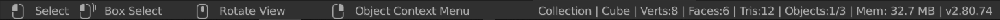

Status Bar¶
The Status Bar is located at the very bottom of the Blender window and is used to present information. The Status Bar can be hidden by dragging it down or from the Window Menu.

Status Bar.
Keymap Information¶
The region to the left of the Status Bar displays information about what mouse buttons and keys do for each editor, mode and tool, and it updates as you hold modifier keys.
Status Messages¶
The region in the middle of the Status Bar displays information about currently running tasks or tools.
- Running Tasks
- A progress bar and a cancel button are shown while doing longer computational tasks such as rendering or baking. Hovering over them shows a time estimate.
- Report Message
- Label for an operator to display results or warnings. It disappears after a short time. By clicking with LMB on the icon on the left side, the full report is copied into a new text data-block, which you can open in the Text Editor.
Resource Information¶
The region to the right of the Status Bar displays information about the current blend-file.
- Active Collection
- Displays the name of the current selected Collection.
- Active Object
- Displays the name of the current selected object.
- Geometry
- Displays information about the current loaded scene dependent on the mode and object type. When two numbers are shown, the first one means the selected, and the second one means the total count. This can be the number of vertices, faces, triangles (Tris) or bones.
- Objects
- Displays the number of selected objects.
- Memory
- The “Mem” label shows the calculated memory consumption by Blender. This can help to identify, when you are reaching the limits of your hardware.
- Blender version
- This label displays the Blender version.